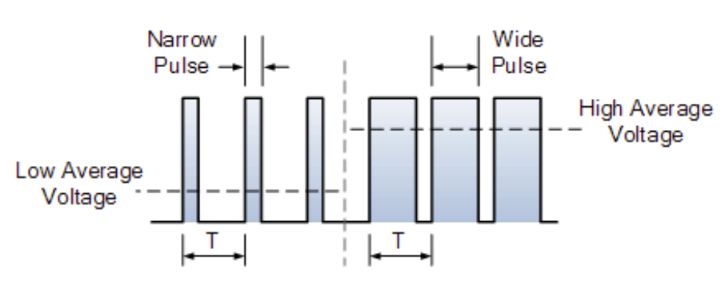
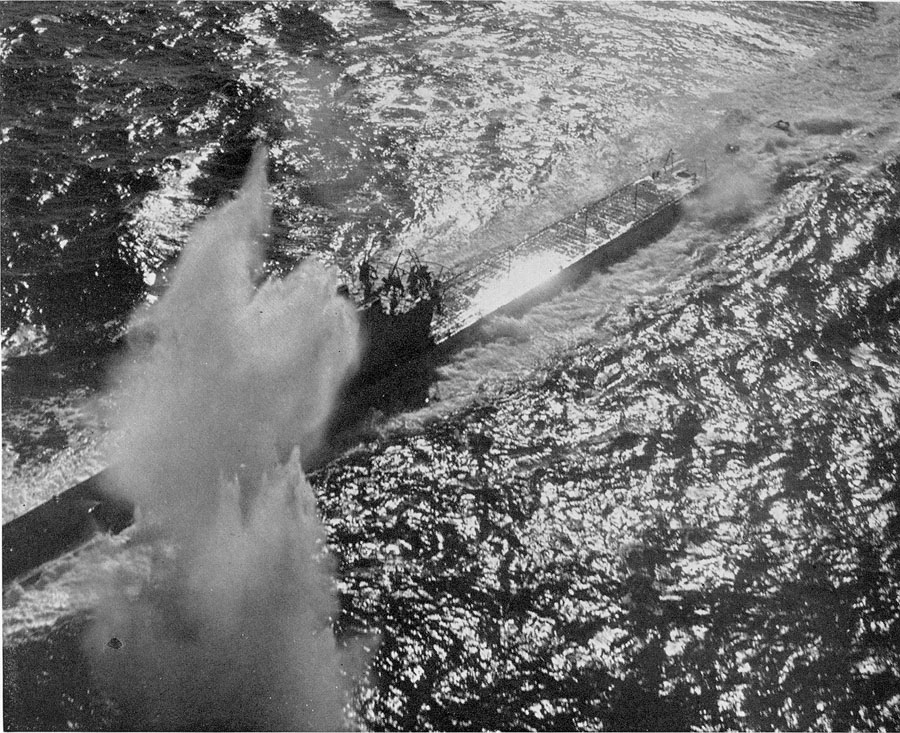
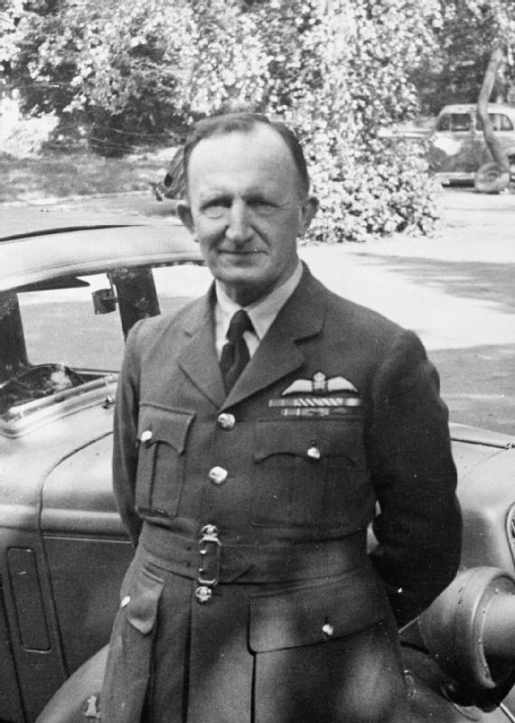
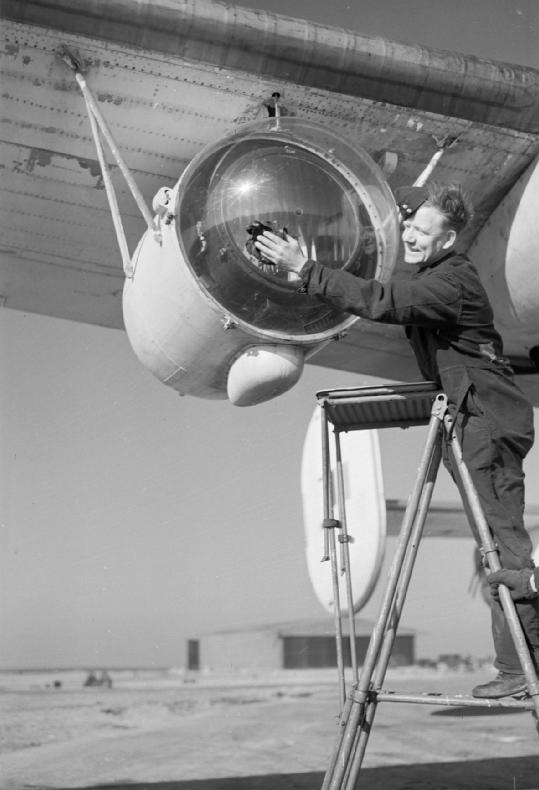
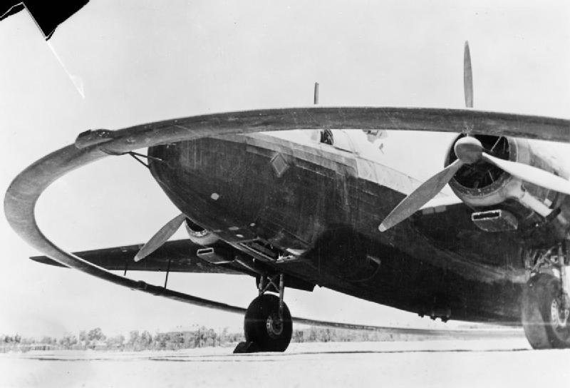
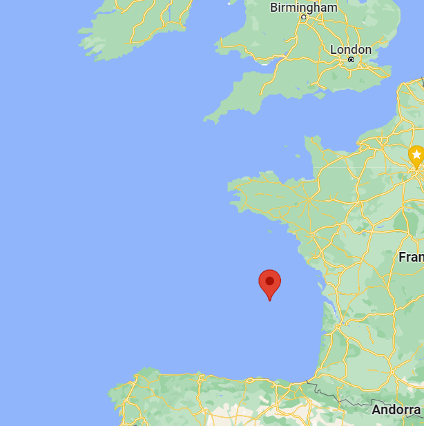
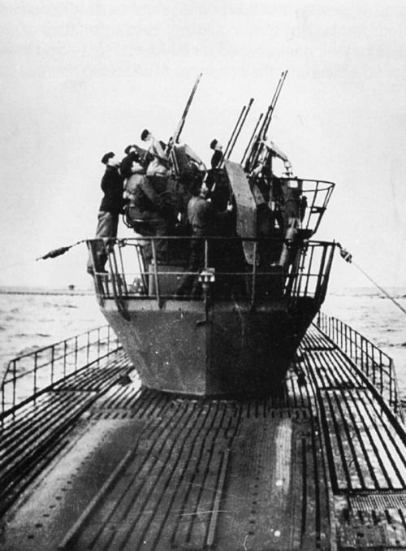
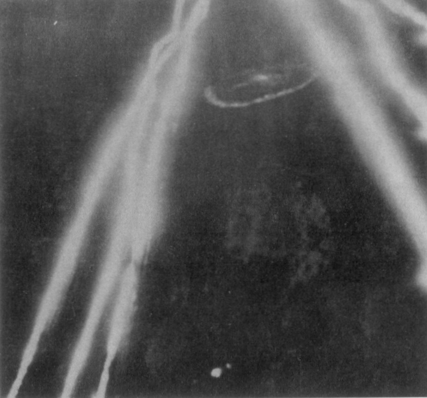

레이더 개발 이야기 (26) - 어둠 속의 빛
게시: 2023-03-23T06:30:51+09:00
<잠수함과 원시(遠示) 레이더> 레이더의 핵심 기술 중 하나가 송신 펄스(pulse)파의 길이를 짧게 만드는 것. 이것이 길면 레이더가 탐지할 수 있는 물체와의 최소거리가 너무 길어지게 됨. 펄스가 발사되고 있는데 반사파가 되돌아오면 탐지가 불가능하기 때문. 전파는 빛의 속도로 움직이니 펄스 길이가 1 micro-second (µs)일 경우 최소 탐지거리는 약 150m. 그런데 WW2 기술로는 영국 공군이 대잠 초계기에 장착한 공대함 레이더 ASV Mk II의 최소 탐지거리는 900m 이상.

(레이더 송신 펄스파의 길이(width)에 대한 그림. 저 펄스 길이가 짧을 수록 레이더의 최소 탐지 거리가 짧아지므로 좋은 것.)
WW2 당시 U-boat는 부상한 상태로 작은 sail (잠수함 위쪽에 불쑥 솟아난 구조물)만 물 위로 내민 채 디젤 엔진으로 항해하면서 배터리를 충전. 이건 10km 밖에서도 영국 대잠 초계기의 레이더에 쉽게 포착됨. 그런데 그 신호를 찾아 그 쪽으로 날아오다보면 1km 정도를 남기고 레이더 신호가 자기 자신의 다음 펄스파에 의해 가려져 버리므로 그 안쪽 거리에서는 눈으로 잠수함 세일을 찾아야 함. 그게 대낮에는 가능한 일이었으나, 유보트도 바보는 아니었으므로 그렇게 세일을 물 밖으로 내미는 것은 밤에만 함. 한밤중에는 수백m 떨어진 곳의 잠수함 세일을 찾는 것이 사실상 불가능. 결과적으로 공대함 레이더를 이용해 유보트 턱 밑까지 가는 것은 가능했으나, 유보트를 사냥하는 것은 불가능했음.

(주간에 부상하여 항행하다 공격받는 U-boat. 잠항시는 배터리로 약 7노트, 부상하여 디젤 엔진을 가동하면 18노트 정도의 속도.)
하지만 거기서 포기하면 영국 공군이 아님. 이미 밤에 해상 목표물을 찾을 때 쓰라고 만든 물건이 있었음. 바로 조명탄. 1km 근방까지 오면 대충 유보트의 위치를 가늠할 수 있었으므로 그 위까지 똑바로 날아가 조명탄을 연속으로 투하한 뒤 다시 선회하여 그 자리로 돌아와 유보트의 정확한 위치를 눈으로 확인하고 그 위에 폭탄을 투하하기로 함. 그러나 유보트가 바보인가? 적기가 날아와 조명탄을 뿌려대면 당연히 서둘러 잠수. 초계기가 조명탄을 뿌리며 날아간 뒤 되돌아왔을 때는 이미 물 밑에 들어간 경우가 많았음. 그런데 이 문제에 대해 Humphrey de Verd Leigh 중령이 내놓은 해결책은 의외로 간단. <조명 좋지. 근데 전기는?> Humphrey de Verd Leigh 중령은 WW1 때 로열 네이비 조종사로 시작했다가 로열 에어포스가 창설될 때 공군으로 넘어간 장교. 그러나 WW1이 끝나자 전역을 택했고 이후 면화 회사에서 일하기도 하고 지붕 건자재 회사에서 일하기도 함. 그러다 WW2가 시작되자 로열 에어포스에 다시 소집됨. 그러나 조종사로는 아니었고 공군에서도 연안 방어사령부(Coastal Command)의 인사부에서 근무.

(레이 중령. 이 양반은 박사도 기술자도 아니었으나 다른 쟁쟁한 박사님들과 함께 연합군의 승리에 결정적인 기여를 함.)
그런데 레이 중령은 ASV 레이더를 달고 유보트 사냥을 나갔다 허탕을 치고 돌아온 초계기 승무원들의 잡담을 듣고는 '거 그냥 탐조등을 달면 될 거 아닌가?'라는 생각을 하고는 상부에 보고도 하지 않고 혼자서 초계기에 탑재할 탐조등 개발에 나섰고, 결국 시제품을 만든 뒤에야 상부에 보고. 그냥 전깃불 아닌가 싶지만 필요시 렌즈를 이용하여 넓게 빛을 비추는 장치가 필요했으므로 나름 복잡하고 무거웠음.

(Consolidated B-24 Liberator의 날개 아래에 달린 레이 탐조등의 모습.)
보고를 받은 상부에서는 레이 중령의 직경 61cm에 무게 0.5톤짜리 거대한 탐조등을 보고 경악. 아이디어는 좋았으나 너무 무겁고 전기도 잔뜩 먹는 이 탐조등을 탑재하기는 쉽지 않았음. 그러나 레이 중령은 연안 방어사령부 사령관 Frederick Bowhill 경을 설득하여 1941년 3월 Vickers Wellington 폭격기를 획득. 웰링턴을 택한 이유는 이 기체가 이미 폭격기가 아니라 Wellington DWI로 개조된 것이었기 때문. DWI는 Detonation Without Impact의 약자로서 독일 유보트가 뿌려놓은 자기감응식 기뢰를 물리적 타격을 주지 않고 강력한 자기장을 이용해 사전 폭발시키기 위해 거대한 전기 코일을 달고 저공 비행을 하도록 개조된 폭격기. 자기감응식 기뢰를 폭발시킬 정도의 강력한 자기장을 광범위하게 만들기 위한 폭격기였으니 여기에는 이미 충분한 출력의 발전기가 달려 있었던 것. 생각해보면 레이더의 전원을 1km 이하의 거리에서는 탐조등의 전원으로 전환하면 되었으므로 레이더를 장착한 초계기라면 전원은 큰 문제가 아니었음.

(Wellington DWI Mark II. 연안 및 항구에서 독일군의 자기감응식 기뢰 제거를 위해 이집트에 배치된 모습. 저 원형의 금속제 자기장 발생 장치는 직경이 15m.)
그 이후에도 무게 중심을 잡는다든지 탐조등을 접이식으로 만든다든지 하는 까다로운 문제가 있어서 레이 탐조등이 실전에 배치된 것은 1년이 훨씬 더 지난 1942년 중순 경. 이렇게 시간을 들여 만든 레이 탐조등의 전과는 과연 어땠을까?
<아닌 밤 중의 홍두깨가 출퇴근 시간을 바꿔놓다> 신무기를 개발하고 장착하는 것과 그걸 적재적소에 투입하는 것은 완전 별개의 문제. 영국군은 이 레이 탐조등으로 가장 큰 효과를 거둘 수 있는 장소를 골랐는데, 바로 프랑스와 스페인 사이의 움푹 들어간 거대한 Biscay 만. 비스케이 만은 프랑스 해안의 기지에서 대서양으로 나가는 유보트들의 출퇴근 노선 역할을 했는데, 영국 로열 에어포스가 유보트의 사냥터가 아니라 유보트의 출퇴근길인 비스케이 만을 노린 것은 매우 현명한 판단. 대서양은 일단 너무 넓었고 또 사냥할 때 유보트는 대개 잠항으로 움직였지만, 출퇴근길은 상대적으로 노선이 뻔했고, 특히 출항할 때는 배터리도 충전할 겸 언제나 야간에 부상한 채로 출항했기 때문. 당시 유보트 함장들의 생각은 '밤에는 부상해서 움직여도 안전하다'는 것.

(비스케이 만. 이 곳은 나폴레옹 전쟁 때도 포르투갈-스페인과 영국 사이를 오가는 영국 화물선을 노린 프랑스 사략선이 맹활약하던 해역.)
원래 이 해역이 그렇게 중요했기 때문에 로열 에어포스 초계기들은 Leigh 탐조등을 장착하기 전부터 열심히 이 지역을 흝고 다녔으나 전과는 매우 초라. 1942년 초부터 약 5개월 동안 6대의 항공기를 잠수함의 대공포와 독일 공군기, 기타 사고 등으로 상실했으나 단 1척의 유보트도 격침시키지 못했음.

(20mm 대공포를 뺵빽하게 장착한 U-boat. 덩치가 크고 느린 초계기에 대해 의외로 유보트가 맹렬한 대공사격을 가해 격추시키거나 심한 손상을 입힌 사례가 꽤 많았음. 영국 공군 연안 방위 사령부(RAF Coastal Command)는 유보트 220척을 격침하는 동안 약 700대의 항공기를 유보트의 대공포와 기타 사고 등으로 상실.)
그러나 1942년 6월, 바로 이 해역에 ASV Mk II 레이더와 Leigh 탐조등을 장착한 초계기들이 투입되자마자 즉각 전과가 나오기 시작. 7월 5일 유보트 U-502를 Vickers Wellington 초계기가 포착하고 폭탄으로 공격, 격침시킨 것을 시작으로, 유보트의 줄초상이 시작됨. 안심하고 야간에 부상한 채 출퇴근하던 유보트들은 난데없이 하늘에서 대낮처럼 밝은 탐조등을 정확하게 비추고 달려드는 영국 초계기에 기겁을 할 틈새도 없이 격침됨. 1km 밖까지는 레이더를 이용하여, 그리고 그 안부터는 탐조등을 켜고 날아드는 초계기들은 1km의 거리를 약 20초 만에 주파했으므로 유보트들은 초계기의 공격에 대응하여 대공포를 쏠 시간도, 긴급 잠항할 시간도 갖지 못했음. 그야말로 일방적인 학살.

(초계기에 의해 파괴된 유보트의 잔해를 레이 탐조등으로 비춘 모습.)
한동안 학살을 당하던 유보트 함장들은 머리를 싸매고 대응책을 논의했으나, ASV Mk II 레이더와 레이 탐조등의 조합에 대응할 방법이 전혀 없다고 판단. 결국 출퇴근 시간을 변경하여 이젠 출퇴근을 낮에 하기로 함. 대낮에 유보트가 부상한 채로 항행하는 것은 매우 위험한 일이었으나, 아닌 밤 중의 홍두깨를 얻어맞느니 차라리 밝은 대낮에 초계기에게 발각되는 것이 낫다고 판단한 것. 그러면 멀리서 날아오는 초계기를 유보트 견시(lookout)들도 볼 수 있으니 대공포를 준비하든 긴급 잠항을 준비하든 뭐라도 해볼 수 있다는 것. 그러나 ASV 레이더와 유보트의 승부는 여기서 끝난 것이 아님. 유보트들은 결국 대응책을 찾아냄.